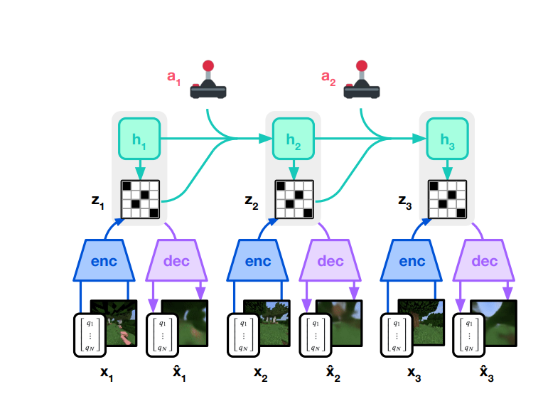
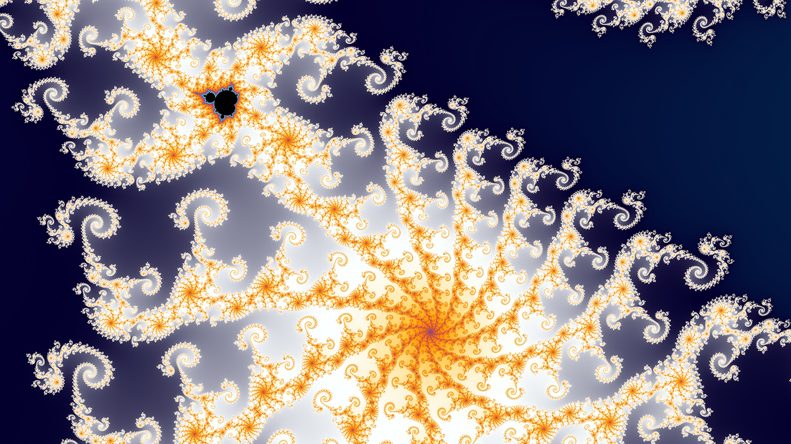

Draft preview · unlisted · Sep 8, 2026
Experiential Learning in Embodied Intelligence
Inspired from biological intelligence

“The most wonderful thing about [children] is their infinite capacity for wonder”— Alison Gopnik
The Bitter Lesson
Last November on the Dwarkesh Patel podcast, Richard Sutton explained the Bitter Lesson, arguing that methods for intelligence leveraging human data are consistently overtaken by those built on a system’s own experience.
Even at scale, approaches that rely primarily on existing data face a fundamental ceiling. Human data is finite (we will eventually run out), and producing more of it is slow and expensive. More importantly, each additional data sample is not generated to maximize model learning, relying on human aggregation and filtering. In contrast, experiential learning methods generate own data through exploration and search. As a result, its progress is bounded only by compute, which has historically proven to scale far better and thus a much better strategy for intelligence.
In chess, AlphaGo, trained on the games of grandmasters, was beaten by AlphaZero, an experience based method which learned by playing, losing, and winning. In Atari, methods built upon the rules of the game were beaten by experience based methods.
In natural language, LLMs initially improved with the scale of data and model parameters. But now that most internet data (and even text from hardcover books) has been consumed, research has returned to reinforcement and test-time learning. And this pattern, where experience vastly outperforms data, has repeated itself across image processing, translation, and scientific understanding.
Still, I don't think this lesson is understood, especially in embodied intelligence. In academic labs and industry, much of the hype surrounds methods built on human-derived priors like language or collecting human data through teleoperation, videos, and egocentric capture. Many of these methods will solve important tasks for automation and manufacturing; but if the goal is general physical intelligence1— not just competence on certain, limited tasks— then these approaches are the exact trap Sutton warns about.
Animals Play
Young animals offer a useful example of experiential learning. They learn from exploration: playing, fighting, moving, falling, and trying new things.
A natural counterpoint against this is that many animals, like horses or giraffes, can walk almost immediately after birth. Indeed, this suggests the opposite of self-exploration: that genes encode a kind of “pre-training.” However, these built-in behaviors are primarily typical of animals with lower encephalization quotient (EQ), or brain to body size. Low EQ animals are ready to act early, but their behavior is less flexible. On the other hand, animals2 with higher EQ like chimpanzees and dogs are the opposite. They are born far more helpless and dependent upon their guardians for longer, but gain the ability to adapt, generalize, and learn from experience.

And importantly, this tradeoff isn’t neutral. Humans, at the extreme end of high EQ, dominate in general intelligence. Human infants are born with very little hardcoded behavior and are vulnerable for years, but with a brain designed to learn rapidly and flexibly.
tl;dr: nature also supports the bitter lesson.
Babies Self-Collect to Learn
The most general learners among young animals are human babies. They are born with little3 control over their bodies or environment, yet they learn to build motor skills, recognize patterns, and predict outcomes.
I want to focus on three aspects of this learning: (1) forming a rich, internal model of the world, (2) self-collection of data, and (3) learning from this continual stream.
Forming an Rich Internal Dynamics Model
From: LeCunn, Schmidhuber, Balastario
The big world hypothesis theorizes that because it is highly unlikely that we can model all aspects of the world4, intelligence must build an approximate5 internal model.
This internal model must convert sensory observations— touch, sight, smell, and taste— into physical actions. Because raw perception is high-dimensional6, containing noise and redundancy, mapping directly from perception to physical actions directly is compute-heavy and doesn't allow for planning.
The solution is to create a function that maps an observation $o_t$ to an intermediate latent state representation $z_t$. Defining a lower dimensional $z_t$ relative to perception forces it to be a compressed function of observations.
$$z_{t}=f(o_{t})$$
Our brains do this all the time. Imagine yourself a coffee shop you frequent. How many chairs are there? Though you've see all of them, you might not know. Like chairs, much of perception is abstracted away. Relevant information is contained, while everything else is ignored. And when intents and goals change, so does latent information, even given the same observation. Latent states are also a goal-conditioned form of perception. So, we can modify the equation above as follows:
$$z_{t}=f\left(o_{t}\left|\right.g_{}\right)$$
We can use each state$z_t$ and a proposed action $a_t$ from the set of actions to predict the next state $z_{t+1}$. This is our forward dynamics model7:
$$\hat{z}_{t+1}=dyna\left(z_{t,}a_{t}\right)$$
Planning is simply the process of rolling out trajectories to imagine different futures. A college student can anticipate the sequence of actions that lead to graduation; an athlete can compare the consequences of eating fast food with cooking a healthy meal. In this way, dynamics models serves not only as representations of the world but also as tools for planning within it.
To learn with this model, we define the loss below and run gradient descent:
$$L=\Vert\hat{z}_{t+1}-z_{t+1}\Vert^2$$
$$=\Vert^{}dyna\left(f\left(o_{t}\left|\right.g_{}\right)_{,}a_{t}\right)-f\left(z_{t+1}\left|g_{}\right.\right)\Vert^2$$
But learning a useful dynamics model introduces a fundamental problem: representation collapse. If both the perceptual encoder and dynamics model and trained jointly to minimize prediction error, they can discover a trivial solution. The encoder maps every observation to the same constant $c$, while the dynamics model simply predicts $c$ at every step. Prediction error becomes 0, but the learned representation contains no information about the world.
The two categories of solutions to this problem are contrastive and non-contrastive learning.
biggest problem: representation collapse → contrastive learning, or regularization
Embodiment of the Mind → World Models by Schmidhuber → Horace Barlow → DinoV3, V-JEPA2, LeJePA
Issues with regularization
Contrastive Learning (using positive and negative samples)
Non-Contrastive Learning (using regularization or architectural asymmetry with stop-gradients/EMA)
Why Regularization?
not decoding
not contrastive
Technical Issues to cross with regularization
assumption of MDP; Adding recurrency: LSTM & RSSM
Different Variations: recurrence, state space models

Some of what was discussed above may seem straightforward. Still, I've explained it in length because I'm not only arguing for dynamics models but also against other methods for representation.
The primary alternate approach is using language as an intermediate representation, either in a Vision Language Model (VLM) or coding models with robotic controls as another tool. This is inefficient and unnecessary. Language is a low-dimensional discretized form of representation, created for communication not reasoning. https://x.com/JitendraMalikCV/status/2097156575492550713
In Mind in Motion, Barbara Tversky explains that it is action not language that forms our internal model of the world. Babies think in complex ways long before they learn language. And after we learn language, our thoughts are still much richer than language. It explains why even those who are brilliant struggle to convert thoughts into words. And it explains why you can think of a thought far faster than you can write it. Mathematically, a latent state can represent much more information than a discrete token, or any combination thereof8.
3D reconstruction, though useful for other purposes like entertainment, is also an unnecessary, lossy intermediate representation for intelligence, as argued by Jon Barron.
Self-Collection of Data Through Exploration
From: Hafner, Pathak, Aggarwal, Effros, Schmidhuber
Intelligence itself can be thought of as a fractal. Learning reveals more of its existing structure; discoveries push its boundaries, the edges of the spiral below, outward.

While significant thought has gone into developing robust internal state representations, far less attention has been given to the motivations behind experiential learning. At whatever stage of learning, child or scientist, intelligence must have signals to push the fractal outward.
But what notions push them towards certain experiences and against others? And why does it appear intelligent to us?
Early in life, children constantly choose where to spend their time and energy. Some experiences intensely capture their interest, while others quickly bore or upset them. Even babies— at the center of the fractal show clear signs of curiosity and disinterest (Gopnik 27). As soon as they can move and explore, they begin shaping their environment around those interests— and when their wants are unmet, parents usually hear about it.
Skild's blog post on S1 explains that for "every dollar spent on data collection, three was spent on quality control."
Robotics often uses extrinsic or task-based rewards as a signal for achievement. This seems limited in scope.
Actions of biological intelligence is clearly guided by intrinsic motivations. Chemical processes in our brains guide us to value certain experiences and disgust others. Sutskever said emotions play a vital role in how we choose to act. We are guided by some combination of the following: curiosity, learning progress, and power.
Curiosity
the desire to explore the unknown
putting stuff in their mouth. (effros speech: https://www.youtube.com/live/vk6lgHjjGp8?si=A5i-9xtzafoA2PRq&t=1389)
Learning Progress
the improvement upon prediction
Occulusion-peek-a-boo: Scientists in the Crib
Learning Progress or LP was first conceptualized by Schmdihuber
Power
Power - to have maximum control over the environment
RL does this at edges of the framework. However the cost is:
humans must repeatedly and continuously build the environments
Power is the ability to stay in a reachable state with a large variance/distribution of high EV states. At the same time, it is about making unreachable states reachable.
I will be writing a more technical article on the three above soon.
Learning Through an Infinite Stream of Data
From: Sutton
RL TD Learning (Sutton, Barto) with curiosity goal
Why simulation is not enough
Per-parameter learning rate
IDBD
Synaptic Intelligence
Resetting some neurons
Replay Buffer
Closing Thoughts
I'm confident that the final stack of embodied intelligence will include a combination of the above. A regularized hierarchical dynamics model, pushed to act with intrinsic desires that maximize learning, and a model architecture that preserves foundational information while being plastic.
Though these ideas have been discussed in the context of physical intelligence, they should extend to autonomous systems in general, including ones operating on the internet.
A quote from one of my favorite shows encapsulates the main idea of this essay well:
“Anyone can memorize facts and figures, but to really LEARN something, you’ve got to go out and do it yourself… follow your curiosity!” - the man with the yellow hat
Citations
This piece builds and connects ideas from Barlow, Barto, Effros, Gopnik, LeCun, Malik, McCulloch, Pathak, Schmidhuber, Silver, Sutton and many more.
- Solving physical intelligence for specific tasks, with data collection will unlock massive value for our labor-constrained economy. From dependence on data to experience, there seems to be three tiers: (1) finite pre-training (2) a continuous-stream of data from deployment (think Tesla's FSD or Cursor's tab autocomplete) and (3) intelligence that searches for specific experiences that will shape its learning the most. The latter is a more ambitious goal, which will win in the long run.
Pigeons, dogs, squirrels, dolphins, pigs, octopus, orangutans.
Interestingly in the Scientist in the Crib, Dr. Gopnik notes that human babies are born not only with instinctual processes such as the beating of the heart, but also surprisingly sophisticated social priors, including the ability to recognize themselves and others as agents.
In one series of experiments, Gopnik’s lab studied whether newborns could imitate human actions. Remarkably, even babies just 42 minutes after birth were able to imitate an adult sticking out their tongue (Gopnik, 30). Somehow, the newborn brain already understood that the moving image in front of it was another human with a body similar to its own. Fascinatingly, this suggests that even human infants, the highest EQ animals, arrive with built-in structure for interpreting the world.
Still, the more interesting trend is that the more intelligent animals rely less on pre-programmed behavior. In the limit, this suggests that the most intelligent systems, though may start with pre-baked knowledge, will acquire most of their knowledge through interaction.
- Modeling all parts of the world, aka a perfect simulation would need two things: (1) a unique internal state for every possible state of the world, and (2) the property that "simulate one step" always matches "let the real world run one step." The counting and storage arguments kill (1). Chaos and quantum randomness kill (2) even for near-perfect attempts — tiny errors blow up, and random outcomes won't match. Fix this???????????
- Simple feed-forward neural networks are powerful function approximators themselves.
Some body parts like the hand and mouth receive relatively more complex, significant information. These require more computation to convert into meaningful representations and thus more neurons in the brain. The sensory homunculus above is a depiction of the human body, where parts are scaled by neuron representation in the brain.
It's important to note that dynamics models approximates causation from correlation. If a state, action pair repeatedly results in a particular state, we can make the assumption that one causes the other. Young children do the same, yet mistakenly rely on a small sample size. They often mistake coincidence for cause— making papers fly at Universal Studios by waving a wand or summoning thunder by clapping. I'm guilty of both.
- Looped transformers use continuous latents and in theory are more expressive. Instead of computing a dot product between the final vector and the models dictionary of tokens, it reuses that vector auto-regressively, only decoding to text at the final step. As explained, this is mathematically more expressive.